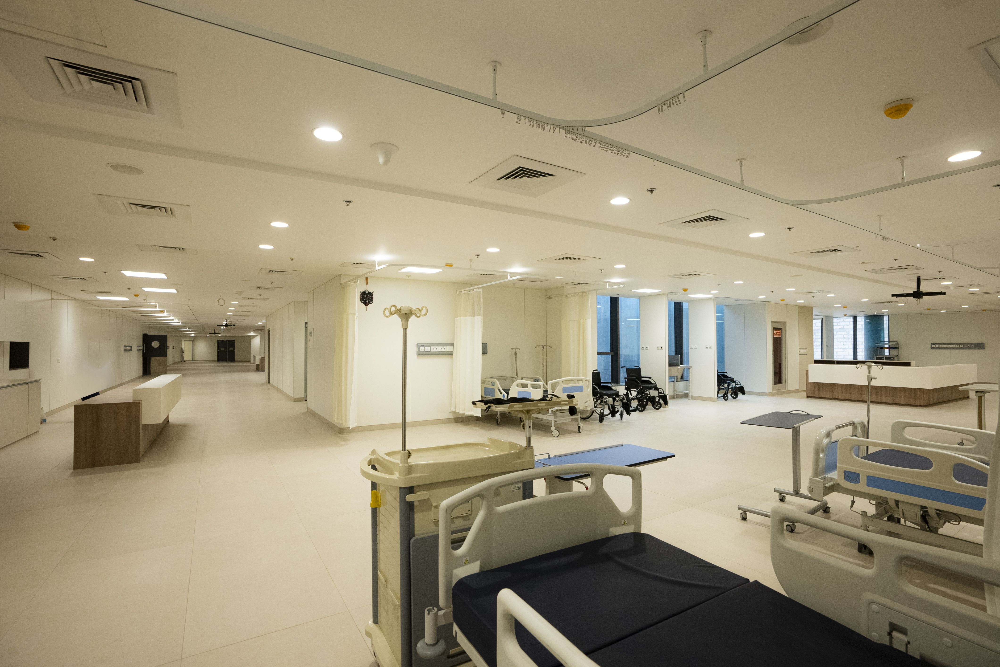

Klinika Haqida
2022-yil avgust oyida ochilgan Amrita Hospital, Faridabad, Hindistonning eng yirik xususiy shifoxonasi bo‘lib, butun dunyo bo'ylab tan olingan Mata Amritanandamayi Math tarmog'ining bir qismidir. Ushbu shifoxona ochilganidan beri tibbiy mukammallikning mayoqi bo'lib kelmoqda.
Klinika bemorlarga yaxlit va jahon andozalari darajasidagi tibbiy yordam ko'rsatishga qaratilgan. Strategik jihatdan 88-sektorda joylashgan bu birinchi darajali muassasaga Dehli NCR hududidan osongina borish mumkin.

Mukammallik Markazlari
Klinika bir nechta ixtisoslashtirilgan yo'nalishlar bo'yicha yuqori darajadagi xizmatlarni taklif etadi.
Kardiologiya va Kardiojarrohlik
Ilg'or diagnostika va jarrohlik aralashuvlari bilan keng qamrovli yurak parvarishi.
Onkologiya
Immunoterapiya va nozik tibbiyot kabi eng zamonaviy usullar bilan saraton kasalliklarini davolash.
Nevrologiya va Neyrojarrohlik
Murakkab miya va umurtqa pog'onasi kasalliklarini boshqarish bo'yicha yuqori tajriba.
Ortopediya
Bo'g'imlarni almashtirish, sport jarohatlari va minimal invaziv muolajalar.
Bizning Mutaxassis Shifokorlarimiz

Dr. Ashish Kumar
Maslahatchi va yordamchi professor, Interventsion Kardiologiya
Ma'lumotlaringiz himoyalangan
Dr. Arun Sharma
Maslahatchi va yordamchi professor, Plastik Jarrohlik Bo'limi
Ma'lumotlaringiz himoyalangan

Dr. Aparna H Mahajan
Maslahatchi - KBB (Quloq, Tomoq, Burun)
Ma'lumotlaringiz himoyalangan
Davolash Narxlari
Yo'nalishni tanlang va eng ommabop muolajalar uchun taxminiy narxlar bilan tanishing.
| Muolaja | Narx (USD) | |
|---|---|---|
| Angiografiya | $300 | So'rov |
| Angioplastika + 1 stent | $3500 | So'rov |
| Koronar shuntlash (CABG) | $4800 | So'rov |
| Klapan almashtirish (Mexanik) | $7500 | So'rov |
| Kardiostimulyator (ikki kamerali) | $6500 | So'rov |
| Muolaja | Narx (USD) | |
|---|---|---|
| Tizza bo'g'imini almashtirish (bir tomon) | $4500 | So'rov |
| Tizza bo'g'imini almashtirish (ikki tomon) | $7500 | So'rov |
| Chanoq-son bo'g'imini almashtirish (bir tomon) | $5500 | So'rov |
| Oldingi xochsimon bog'lam (ACL) rekonstruktsiyasi | $3100 | So'rov |
| Muolaja | Narx (USD) | |
|---|---|---|
| Prostata transuretral rezeksiyasi (TURP) | $2200 | So'rov |
| Laparoskopik Nefrektomiya | $3000 | So'rov |
| Buyrakdagi toshlarni maydalash (PCNL) | $2500 | So'rov |
| Muolaja | Narx (USD) | |
|---|---|---|
| Buyrak transplantatsiyasi | $13000 | So'rov |
| Jigar transplantatsiyasi (Kattalar) | $23500 | So'rov |
| Suyak iligi transplantatsiyasi (Autolog) | $15000 | So'rov |
| Suyak iligi transplantatsiyasi (Allogen) | $25000 | So'rov |
| Muolaja | Narx (USD) | |
|---|---|---|
| Umurtqa pog'onasi fuziyasi (1 pog'ona) | $5500 | So'rov |
| Miya o'smasi (Supratentorial) | $5100 | So'rov |
| Chuqur miya stimulyatsiyasi (DBS) | $33000 | So'rov |

Ilg'or Infratuzilma
- Jahon darajasidagi tibbiy kampus: 130 gektardan ortiq maydon, 1 million kvadrat metrlik qurilgan maydon.
- Ixtisoslashtirilgan markazlar: Keng qamrovli Saraton markazi, organ transplantatsiyasi bo'limi (buyrak, jigar va yurak).
- Eng so'nggi texnologiyalar: PET CT, 3T MRI va boshqa zamonaviy tasvirlash tizimlari bilan jihozlangan ilg'or radiologiya xizmatlari.
- Robotik jarrohlik: Minimal invaziv robotik tizimlar.
- Sun'iy intellekt integratsiyasi: Aniq diagnostika va shaxsiylashtirilgan davolash rejalari uchun AI va Machine Learning.
- Ekologik toza dizayn: Quyosh energiyasi tizimlari va suvni qayta ishlash qurilmalari.
Galereya


Yaqin atrofdagi mehmon uyi
KRISHNA HOME
Amrita shifoxonasi yaqinida joylashgan Krishna Home - bu byudjetli apartamentlar bo'lib, bemorlar va ularning oilalari uchun qulay narxlarda qulay yashash imkoniyatini taqdim etadi.
Manzil: Amrita hospital plot no- 175 sector- 21c Faridabad Haryana- 121012
Uchrashuv so'rash
Shaklni to'ldiring, bizning mutaxassislarimiz siz bilan tez orada bog'lanishadi.